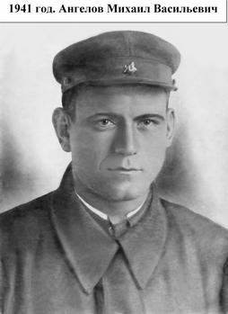
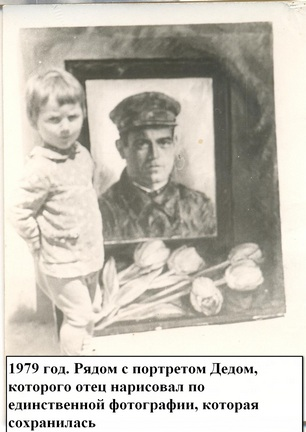

|
Помогите найти Деда!
На протяжении нескольких лет пытаюсь установить место захоронения своего Деда, пропавшего без вести в Великую Отечественную войну – Ангелова Михаила Васильевича. Безуспешный розыск, в первую очередь, связан с тем, что в Книге мобилизации Ивановского РВК Чкаловской области за 1941 год (ныне Красногвардейский район Оренбургской области) содержатся только сведения о дате мобилизации воинов, но нет информации, с какого воинского соединения начат их боевой путь.
По Донесениям о безвозвратных потерях Чкаловского облвоенкомата за 1946 год Ангелов Михаил Васильевич, мобилизованный 23 июня 1941 года, числится пропавшим без вести в марте 1942 года. Также в Донесениях в графе: «Когда и с какого времени прекратилась связь и с какой частью» указано: «04.12.1941г. п/п 564 «п», которая перечеркнута и сверху рукописная надпись: «пропал без вести март 1942 года». В Книге Памяти Оренбургской области указано, что Ангелов Михаил Васильевич, рядовой, шофер, 1916 г.р., умер от ран в 1941 году.
В семье сохранилась легенда, что Дедушка воевал на Калининском фронте и был тяжело ранен под городом Лихославлем, умер на руках друга, о чем и было сообщено другом родным. Но ни похоронки, если таковая была, ни писем в семье не сохранилось.
Всю сознательную жизнь мой отец не терял надежды прояснить судьбу своего отца. Я с детства слышала в его рассказах: город Лихославль и выросла с этим словом в сердце.
Четыре года назад моего отца не стало, и теперь я не теряю надежды найти землю, которую полил кровью мой Дед.
В первую поездку в Центральный Архив Министерства Обороны, которая состоялась в марте 2009 года, но как и во все последующие, не нашла дополнительной информации, равно как и в архиве Приволжского военного округа в городе Самаре, во время поездок в город Тверь, в город Лихославль. Многочисленные запросы в различные архивы и учреждения также не давали никакой зацепки.
Благодаря помощи администратора сайта «Солдат.ру» Ивлева Игоря Ивановича и опытных исследователей через форум сайта «Солдат.ру» проверяла различные версии. Искала Деда в стрелковых и артиллерийских частях, автотранспортных батальонах, районах авиационного базирования фронтов. При полном отсутствии сведений о боевом пути Деда, начала искать информацию через других бойцов: как правило, воины, мобилизованные в один день, попадали в одну команду или в одну маршевую роту, и в первые месяцы войны воевали вместе. Но ниточки «рвались» одна за другой.
Не удавалось найти никакой информации до знаменательного дня – когда исследователь из города Кинешма Ивановской области Юрий Смирнов предложил несколько версий по стрелковым полкам и госпиталям, основываясь на номер, указанный в Донесениях о безвозвратных потерях - 564. И последняя его версия-предположение о том, что Дед мог быть мобилизован в полевой госпиталь № 564 оказалась верной.
В ЦАМО РФ сохранилось всего одно дело 564 ППГ «О денежных документах» и в нем финансовые ведомости на выдачу денежного содержания, в том числе и рядовому составу. И в списках – мой Дед – Ангелов Михаил Васильевич, получавший денежное содержание с августа по ноябрь включительно 1941 года. В финансовой ведомости за декабрь 1941 года его уже нет. В Книгах умерших 564 ППГ Ангелов М.В. не значится.
С помощью базы данных сайта «Солдат.ру» удалось установить, что 564 ППГ на 01.11.41г. дислоцировался в г.Бежецке, а на 06.12.41 г. в селе Ведное Рамешковского района. Если взять за основу дату когда прервалась связь с частью с Донесений о безвозвратных потерях – 04.12.41 – то получается, что Дед мог погибнуть в начале декабря 1941 года и захоронен между г.Бежецком и селом Ведное. Но мог также быть отправлен в командировку в г.Лихославль, где находилась узловая станция и куда приходили грузы, и попасть под бомбежку в пути следования. Но это все предположения.
Мое обращение в военкоматы Тверской области пока также не дало никакого результата: получен ответ из десяти военкоматов – в братских могилах Ангелов М.В. не значится. Ожидаю ответ еще из шести военкоматов.
Направила повторные запросы в архивы и учреждения, в том числе запросы в Архив военно-медицинских документов в г. Санкт-Петербург, в Министерство здравоохранения Оренбургской области, ищу любые сведения о 564 передвижном полевом госпитале и его дислокации по дням за ноябрь-декабрь 1941 года, а также о 89 ПЭП, которому подчинялся 564 ППГ.
Я обращаюсь ко всем жителям Тверской области с огромной просьбой! Может быть, кто-то был свидетелем гибели моего Деда – Ангелова Михаила Васильевича, или вспомнит о нем по фамилии, которую может быть слышал в детстве, или узнает его по фотографии.
В ходе поиска часто слышу один и тот же вопрос: «Зачем ищу Деда, сколько лет прошло, разве так важно знать, где он погиб?». Ответ неизменен: не хочу быть Иваном, не помнящим родства. Мне очень важно найти землю, где похоронен мой Дед.
С уважением Олеся Ангелова,
г. Краснодар, сот.тел. 8-918-995-04-67
|